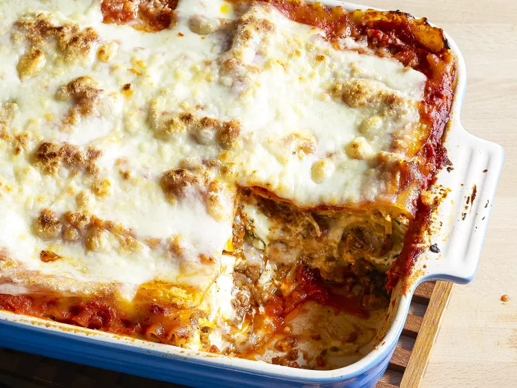

World's Best Lasagna

Preparation
Prep Time: 30 mins
Cook Time: 2 hrs 30 mins
Additional Time: 15 mins
Total Time: 3 hrs 15 mins
Servings: 12
How to Make Lasagna
Making lasagna can be time-consuming, but the results are well worth
the wait. You'll find a detailed ingredient list and step-by-step
instructions in the recipe below, but let's go over the basics:
Ingredients
The Allrecipes community adores this lasagna recipe because it's
incredibly customizable, so you can easily alter the ingredient list to suit
your needs. If you want to stay true to the original recipe, though, these
are the ingredients you'll need to add to your grocery list:
- Meat:
This super meaty lasagna has sweet Italian sausage and lean
ground beef.
- Onion and garlic:
An onion and two cloves of garlic are cooked with
the meat to add tons of flavor.
- Tomato products:
You'll need a can of crushed tomatoes, two cans of
tomato sauce, and two cans of tomato paste.
- Sugar:
Two tablespoons of white sugar add subtle sweetness and
enhance the flavor of the sauce.
- Spices and seasonings:
This lasagna recipe is flavored with fresh
parsley, dried basil leaves, salt, Italian seasoning, fennel seeds, and
black pepper.
- Lasagna noodles:
Use store-bought or homemade lasagna noodles.
- Cheeses:
Parmesan, mozzarella, and ricotta cheese make this lasagna
extra decadent.
- Egg:
An egg helps bind the ricotta so it doesn't ooze out of the lasagna
when you cut into it.
Step-By-Step Guide
Here's a very brief overview of what you can expect when you make
homemade lasagna:
- Make the meat sauce.
- Cook the noodles.
- Make the ricotta mixture.
- Layer the lasagna according to the recipe instructions.
- Cover with foil and bake.
- Let the lasagna rest before serving.
How to Layer Lasagna
The detailed layering instructions can be found in the recipe below, but
this is the order you'll follow:
- Meat sauce
- Noodles
- Ricotta mixture
- Mozzarella slices
- Meat sauce
- Parmesan cheese
- Repeat the layers, then top with the remaining Parmesan.